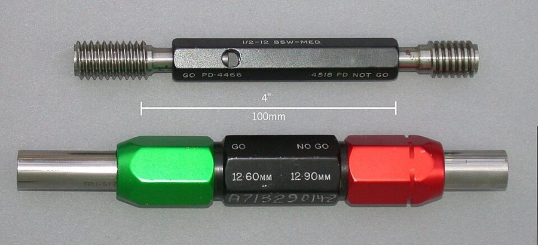

这一章在做什么
Dan 回老东家。两个月的事写得很快，分四段：招聘处的窗口，总经理办公室，在公司里的日常，最后一通电话。
前两段几乎全是对话，推销腔和客套话多，Dan 的嘴也没闲着；第三段是两个工程师喝着啤酒闲谈，夹着公司、专利、合同的行话。
抓两样：这家公司想拿 Dan 派什么用场 ；同事劝他提防什么 。
福特公司的 River Rouge 工厂，约 1927 年。这一页头一段，Dan 拿 Ford 和 General Motors 当年在汽车业的分量，来比书里两家做家用机器的公司。
Detroit Publishing Co.，公有领域，维基共享资源
人物
都是虚构的人。老人物只写到上一页结束时你已经知道的。
Dan Davis 叙述者「我」 醒来快三个月。白天在废车场站岗，业余泡图书馆补课，想找一份摸得到绘图机的差事。
Curtis新 Hired Girl 公司的总经理 下属用名字的首字母叫他 B.J.。场景 2 出场。
Jack Galloway新 销售经理 说话像在念广告标题。
Mr. McBee新 总工程师，也叫 Mac 苏格兰人，话少。
Chuck Freudenberg新 零部件部门的副总工程师 场景 3 里和 Dan 谈得来的同事。
招聘处的办事员、挡驾的女职员新 没有名字 场景 1 里 Dan 要过的两道关。
Mrs. Schultz 只听过名字 从上一章起就往疗养所留话找 Dan，自称是老朋友。Dan 想不起这是谁，一直没回。
Mr. Doughty 只提到，没出场 疗养所的财务主任，替 Dan 收着留言。
Belle 和 Miles Dan 的前未婚妻和前合伙人 上一页 Dan 查了电话簿和选民册，没找到；公司回信只承认三十年前有过这两位高管。
Ricky 只提到，没出场 上一页只查到她 1971 年从 Mojave 的小学转走，银行里没有她的信托。
这一页
3 月 5 日起
2000.12.13
醒来
12.15
到废车场上班
转年开春
补课，看绘图机，查人
上一页结束时
工作
在废车场握着总停开关
想要
进工程部门，哪怕当绘图员
Belle、Miles、Ricky
下落不明
本站示意图。都是上一页交代过的。
场景地图
这一页是第 6 章的第 85–142 段，本站按场景分成 4 段。粗体是每个场景开头的几个词，照着它在书里找位置；读完一个场景回来打个勾。
BUT THE FAILURE of my …约 400 词 招聘处，再到前门。留意对方怎么算 Dan 的年龄，和他过最后一关时说的那句话。 Sixty seconds later I was …约 550 词 总经理办公室。三位主管三种态度，留意各人想从 Dan 身上得到什么。 I HAD A GOOD time …约 650 词 三四月间的日常，和 Chuck 下班闲谈。留意 Chuck 问的那个关于合同的问题。 Instead of handing my story …约 350 词 宣传、来信、一通电话。很短，逐句读。留意他本来为什么不想接。
背景：作者默认你知道的事
这些都是真实世界里的东西，1950 年代的美国读者一看就懂。按在书里出现的顺序排。
场景 1 「四十五岁以上不招」1950 年代美国的招工启事可以公开写年龄上限，四十五岁是常见的一条线。到 1967 年才有联邦法律禁止歧视四十岁以上的求职者。
old-age pension 是政府发的养老金，当时六十五岁起领。white-collar （白领）指坐办公室的职员，和穿工装的 blue-collar 相对。
场景 1 通止规（go / no-go gauge）
通止规。一头该塞得进孔，另一头该塞不进，两头都对，零件才算合格。
Glenn McKechnie，CC BY-SA 3.0，维基共享资源 车间里检验零件尺寸的量规，不给读数，只给「过」和「不过」两个答案。书里说一个人是 pass-gauge type ，是工程师的比方：这人只管放行或拦下，没有商量。
场景 2 Emeritus拉丁语，「荣休的」。大学教授退休后保留头衔，叫 professor emeritus ：名字还在系里，课不用上，事不用管。这个词按拉丁语的习惯放在名词后面，几乎只用在教授、主教这类终身的职位上。
场景 2 格拉斯哥口音和 Clyde 河
1944 年，格拉斯哥一家船厂的工人午间下工。
英国新闻部摄影处，公有领域，维基共享资源
格拉斯哥（Glasgow）在苏格兰的 Clyde 河边。十九世纪到二十世纪上半叶，这条河两岸是世界造船和重型机械的中心。英语世界里「苏格兰工程师」因此成了一个固定形象：手艺扎实，口音重，一急口音更重。
the bonnie banks 套的是苏格兰民歌《Loch Lomond》的歌词，bonnie 是苏格兰话的「美丽」。
场景 4 Life 杂志的 spreadLife 是美国的图片新闻周刊，1950 年代每期卖几百万份。spread 是摊开的左右两页连成的一个版面，登上它的 spread 等于全国人都看见了。
第 2 章里，Hired Girl 第一批货卖不动，就是它的一个跨页报道把销路打开的。
书里的世界
下面是这一页新出现的设定。作者是 1956 年写的，第三列里的东西都是他写完之后才问世的。
AT&T 的 Picturephone 可视电话，1970 年代初的型号。书里 2000 年的电话带屏幕是常态，没屏幕的反倒要特意说明。
Labguy（Richard Diehl），CC BY 3.0，维基共享资源
书里的说法 在书里是什么 真实世界里 appliance automatons 家用自动机这个行业。Hired Girl 和 Aladdin 是两个最大的牌子。 最早卖开的家用机器人里有 2002 年的 Roomba 扫地机（第 2 章见过）。 the ground automobile 「地面汽车」。书里说它的全盛期已经过去。 — real flesh and blood 别处用机器当接待员（上一章的疗养所就是），Hired Girl 总部偏用真人。 — solid circuits 2000 年的工程师要会设计的东西，Dan 只在公开刊物上读到过一点。没解释。 1958 年 Jack Kilby 在德州仪器公司做出第一块集成电路，比这本书晚两年。德州仪器早期就把这类产品叫 Solid Circuit。 nonclassified publications 不保密的出版物。言下之意：有些技术资料是保密的。 — grabbie star 电影明星。grabbie 是上一章学到的新词，就是 movie。 — 带屏幕的电话 打电话能看见对方。Dan 办公室那一台没有屏幕。 AT&T 1964 年在纽约世博会上展出 Picturephone，1970 年开始商用，没几年就停了。视频通话普及要等到宽带和智能手机。 Life 在书里的世界照旧是全国性的大杂志。 真实的 Life 周刊在 1972 年底停刊。
这一章的行话，先用中文过一遍
场景 3 的闲谈里有两件正事：一家公司是怎么换了主人的；工程师想出来的东西归谁。
授权（license）和换股合并（merger）
授权 license
换股合并 merger
专利持有人
制造商
准许生产
按期付费
两家各是各的
甲公司
乙公司
新公司
两家股东都换成新公司的股票
本站示意图。合并后的新公司叫什么名字，由两家商量；常见的做法是挑名气大的那个。
授权是「东西还是我的，你付钱就可以用」，和软件许可证是一回事。合并是两家并成一家。stock swapped for stock 是换股：不掏现金，旧公司的股东把股票换成新公司的。
这样做在税上往往比现金买卖划算，所以书里叫它 tax-saving merger 。
上班时想出来的发明归谁
情况
发明归谁
签过发明转让协议
公司
没签，但用了公司的时间或设备
发明人，但公司可以免费使用
没签，纯属业余
发明人
本站示意图。这是美国法律的大致轮廓。专门受雇来做某项发明的人，即使没签协议，成果也归公司。
美国的公司通常让工程师入职时签一份协议，把在职期间的发明预先转让给公司。没签的，发明原则上归发明人自己；但只要用了公司的时间（on company time ）或设备，公司就有权免费使用，这叫 shop right。
程序员的劳动合同里那条知识产权条款，管的是同一件事。
英文 中文 一句话 rent the patents 租用专利 口语说法，就是拿授权、付授权费。 acquired by license 靠授权拿来的 产品不是自己研发的，是付费用别人的专利做的。 merger 合并 两家公司并成一家。 a piece of it 一份股权 口语。have a piece of the company：在公司里有股份。 on the payroll 在工资名单上 payroll 是发薪名册。上了名册就算雇员，不等于签了合同。 contract （雇佣）合同 写明职责、报酬，以及发明归谁。 general manager / sales manager / chief engineer 总经理 / 销售经理 / 总工程师 当年美国制造企业的三个要职。总经理就是 the big boss。 founder 创始人 — display advertising 图文广告 报刊上占一块版面、有图有标题的广告，和分类小广告相对。上一章见过。 list price 标价 上一页见过。
词与短语
词条按在书里出现的顺序排，按场景分组。斜体小字是它所在的那句话里的几个词，方便你在书里找到。
场景 1 BUT THE FAILURE of my …
heyday
… been in the heyday of the …
全盛时期
outfit
… what my old outfit had grown …
公司，班底
口语里指一个单位、一伙人。不是「一身衣服」。
white-collar help
… line for white-collar help, filled out …
白领雇员
help 当名词：雇来的人手。招工启事上写 Help Wanted。
don’t-call-us-we’ll-call-you
… and was told don’t-call-us-we’ll-call-you. …
「回去等通知吧」
面试后打发人的套话，实际意思是没戏。用连字符连成一个词，是把整句话当成一个名词。
bull myself in
… managed to bull myself in to …
硬闯进去
bull 当动词：像公牛一样往里拱。
flunky
… an assistant hiring flunky. He reluctantly …
跑腿的小角色
本义是穿号衣的仆人。
give him some advice
… before I gave him some advice. …
「回敬他几句忠告」
反话。对方刚给了他一条「建议」，他怕自己忍不住还嘴。
pass-gauge type
… a firm pass-gauge type who insisted …
通止规式的人
见上面「背景」。
my business
… insisted on knowing my business. …
我的来意
business 是「要办的事」。下一段的 State your business 就是「说明来意」。
场景 2 Sixty seconds later I was …
chummy
… Then things got chummy over drinks …
亲热起来
chum 是老朋友。
in the automobile business
… been in the automobile business. But …
在汽车这一行
字面上没撒谎。想想他这三个月干的是什么。
sales angle
… know a sales angle if it …
卖点，宣传的切入角度
angle 是「角度」，新闻和广告行话。
sales copy
… Because you’re sales copy, that’s why! …
广告文案（的好材料）
copy 是印刷用的文稿，不是复制品。copywriter 是写文案的。
romance
… Because you’re romance. Founder of …
传奇，有故事可讲
不是恋爱。这里指能打动人的传奇色彩。
Brain Child
… Grave to Visit Brain Child. Inventor …
脑子里生出来的孩子：发明
通常写作 brainchild。这两句是 Galloway 当场拟的报纸标题，所以每个词首字母大写、冠词全省。
be any addition to
… I would be any addition to …
给……添一个有用的人
nonclassified
… little reading of nonclassified publications. …
不保密的
classified 是「列入密级的」。
move on
… the industry has moved on since …
往前走了，不是当年的样子了
客气的说法，意思是「你过时了」。
Research Engineer Emeritus
… of...uh, ‘Research Engineer Emeritus.’ …
荣休研究工程师
见上面「背景」。uh 说明这头衔是当场想出来的。
facilities
… You’d have facilities and you could …
设备和场地
下一句 Dan 追问 Shop facilities，是问车间给不给用。
within reason
… certainly...within reason, of course. …
在合理的范围内
先答应，再留一个口子。
May I be excused
… May I be excused, B.J.? Don’t …
我可以先告退吗
离席的客套话。用首字母称呼上司是美国公司里的习惯。
with my own pinkies
… with my own pinkies and lots …
亲手
pinky 是小指。故意说得孩子气，等于 with my own two hands。
场景 3 I HAD A GOOD time …
shoptalk
… the shoptalk of professionals...music to my …
同行之间聊的本行话
shop 是车间、本行。talk shop：三句不离本行。music to my ears：听着舒坦。
for my money
… chief engineer. For my money Chuck …
依我看
和钱无关。「要我下注的话」。
slipstick mechanics
… rest were overeducated slipstick mechanics...including McBee, …
只会拉计算尺的匠人
slipstick 是计算尺（slide rule）的俚称。意思是学历高、会套公式，没有设计的本事。
it takes more than … to make
… it took more than a degree …
光有……还成不了
bonnie banks
… on the bonnie banks of the Clyde. …
美丽的河岸
见上面「背景」。Chuck 在学 Mac 的腔调。
tax-saving mergers
… one of those tax-saving mergers, with …
为省税而做的合并
one of those：那种常见的。
a piece of it
… “He’s got a piece of it, …
在里头有一份（股）
sit over beers
… used to sit over beers in the …
对着啤酒坐着聊
over + 饮料：边喝边谈。场景 2 的 over drinks and cigars 同理。
the whichness of what
… needed, and the whichness of what. …
天南地北、玄而又玄的事
戏仿哲学腔的俏皮话，没有实际意思。
queezy
… had a queezy interest in Sleepers …
叫人不舒服的
通常拼作 queasy，本义是反胃。freaks：怪胎。
set me straight
… my head, and set me straight when …
给我纠正过来
rough out
… would rough out something that was …
画出个草样
old hat
… that was old hat...in 2001 A.D. …
老掉牙的东西
on company time
… work on this on company time? …
在上班时间里
见上面的行话。
How does your contract read?
“How does your contract read?”
你的合同上是怎么写的？
read 的主语是文件：上面写着。The sign reads … 同理。
put on the payroll
… had put me on the payroll and …
列进工资名单（开始发薪）
ghost writer
… had a ghost writer asking me …
代笔人
替名人写「自述」、不署名的写手。
where you stand
… you are sure where you stand. This …
你的处境，你占不占理
acquired by license
… we’ve acquired by license. I can’t …
靠授权拿来的
get … past
… can’t get anything new past Mac. …
让……过得了某人这一关
下一句的 bypass Mac 是绕开他。
show-window dummy
… to be a show-window dummy for …
橱窗里的假人模特
dummy 是假人。sucked dry：被吸干。
a vote of thanks
… pay and a vote of thanks …
一句口头的感谢
会议上「提议向某人致谢」并表决通过的礼节，不值钱。
let me go
… of thanks and let me go. …
把我辞掉
let someone go 是解雇的委婉说法，不是「放我走」。
take a flyer
… Chuck wanted to take a flyer …
冒一回险
本来是股市上的投机一把。
场景 4 Instead of handing my story …
play it slow
… Galloway played it slow for the …
不急着出手，慢慢来
play it + 形容词：按某种打法办。上一页有 played it real smart。
do a spread
… wanted Life to do a spread, …
做一个跨页专题
见上面「背景」。a third of a century 是三十三年多一点。
tie in with
… a spread, tying it in with …
和……搭在一起做
广告行话：tie-in 是联动宣传。
rise to the bait
… did not rise to the bait but …
上钩
鱼浮上来咬饵。
plant
… did manage to plant it several …
把（稿子）安排登出去
公关行话：plant a story 是把消息「种」进媒体。
crank mail
… a certain amount of crank mail, including …
怪人寄来的信
crank 是想法偏执的怪人。
screwball
… one of those screwballs who pursued …
怪人，神经兮兮的人
原是棒球里一种轨迹古怪的球。
owe it to someone to
… Well, I owed it to Doughty to …
冲着某人的情分，该做某事
Put her on
… shut her up. “Put her on.” …
把她接进来
电话用语，对总机说的。
Speaking
“Speaking. Your name is Schultz?”
我就是
接电话时对方问「是某某吗」，答 Speaking。
值得停下来的句子
“I want to know what he’s going to do about my wife!”
— 场景 1，Dan 对着满屋子职员喊。本站译：「我要问问他，我老婆的事他打算怎么办！」
Dan 没有妻子。这句话一个字没提 Curtis 干了什么，听的人会自己补上最难听的那种解释，四十个职员都听见了，女职员只能马上把他送进去。
注意前一句的铺垫：他先「四下看了看」，数清了屋里有多少人，才开口，还特意 loudly 。六十秒后他就进了门，再花半个小时把这句话解释清楚。
“All you engineers are alike; you wouldn’t know a sales angle if it came up and kissed you.”
— 场景 2，Galloway 对 McBee 说。本站译：「你们工程师都一个样，卖点自己凑上来亲你们一口，你们也认不出来。」
句式是英语里现成的损人话：wouldn’t know X if it … ，后半句越离谱越好。它在这里干了两件事：把 Dan 和 McBee 划成一类人（都是不懂销售的工程师），又顺手告诉你这家公司里销售和工程是什么关系。
Dan 和 McBee 这时偏偏最不是一路人，一个想进工程部，一个不想要他。
I knew her, all right. It was Belle Gentry.
— 这一章的最后两句。本站译：我认得她，错不了。是 Belle Gentry。
前一句对方问 Don’t you know me? ，Dan 没有回答她，这两句是说给读者听的。注意姓氏：他叫她 Gentry，那是 Miles 的姓，是第 3 章摊牌那晚才知道的；电话里通报的却是 Mrs. Schultz。
上一页他花钱按 Gentry 和 Darkin 两个姓查遍全国都没查到，多半就是这个缘故。还有一个细节：她开口叫的是 Danny 。
检查一下理解
先在心里答，再点开。答错的那题，回书里把对应的场景再读一遍。
1.（场景 1）招聘处凭什么说 Dan 超龄？Dan 自己怎么算？
公司不招四十五岁以上的人，办事员按出生年份 1940 算，Dan 已经六十岁，睡着的三十年照算。Dan 按身体的年龄算，自己才三十。对方还说，学位三十年没用过等于作废，是 Sleeper 就「更糟」。
2.（场景 1）办事员劝他去申请养老金，Dan 说自己赶紧走开，「免得给他一点忠告」。这是什么意思？
反话。他是怕自己忍不住骂人或者动手。他没有走，绕了大半英里到正门，直接找总经理。
3.（场景 2）Curtis 说公司的正史上写着 Dan 已经死了。Dan 的回答是当真的吗？
是玩笑。他说那只是谣传，死的是另一个同名同姓的人，等于说「死的不是我」。这是他一贯的抬杠法，气氛也是从这里松下来的。
4.（场景 2）Galloway 想让 Dan 干什么？Dan 想要什么？最后怎么定的？
Galloway 要他当活广告：创始人「死而复生」回来看自己的发明。Dan 只想要一份工程师的工作。Curtis 折中：给一个荣休研究工程师的空头衔，条件是配合销售部，工程上的事随他自己，车间在合理范围内可以用。
5.（场景 2）McBee 为什么问 Dan 懂不懂 solid circuits？他最后那句「当然，当然」是痛快答应吗？
他是在不动声色地指出 Dan 的本事过时了，Dan 只好承认只读过一点。那句答应是勉强的：他加了「在合理范围内」，而且口音重到 Dan 几乎听不懂。后来他连第一台 Hired Girl 都不让 Dan 开机。
6.（场景 3）现在这家 Hired Girl，是 Dan 当年办的那家公司吗？
不完全是。据 Chuck 听说，现在的公司原本是一家制造商，向 Hired Girl 租用专利；大约二十年前两家换股合并，新公司沿用了 Hired Girl 的名字。Chuck 自己也不清楚细节。
7.（场景 3）Chuck 为什么劝 Dan 先别把听写机的点子拿出来？Dan 是怎么做的？
Dan 没签合同，只是上了工资名单，东西归谁说不清；直接交给老板，等于只拿一份工资就把一项全新的发明送掉。公司五年来没有自己的新产品，Chuck 知道它值钱。Dan 照旧设计，但把满意的图纸烧掉，只记在脑子里，打算等宣传价值用完、被辞退后自己开业。
8.（场景 4）Dan 为什么一直不回 Mrs. Schultz 的电话？他是怎么认出她的？
他以为是那种追着 Sleeper 问私事的怪人，只是答应过 Doughty 要处理，才接了。他办公室的电话没有屏幕，两边都看不见人；他是从声音和那声「Danny darling」认出来的。
留给后面的问题
这些是这一页自己提出来、但没有回答的。
Belle 为什么成了 Mrs. Schultz？Miles 呢？
Dan 还没出院，她就在往疗养所留话。她找他想干什么？
Dan 一直说要找这两个人算账。现在人自己找上门了，他打算怎么办？